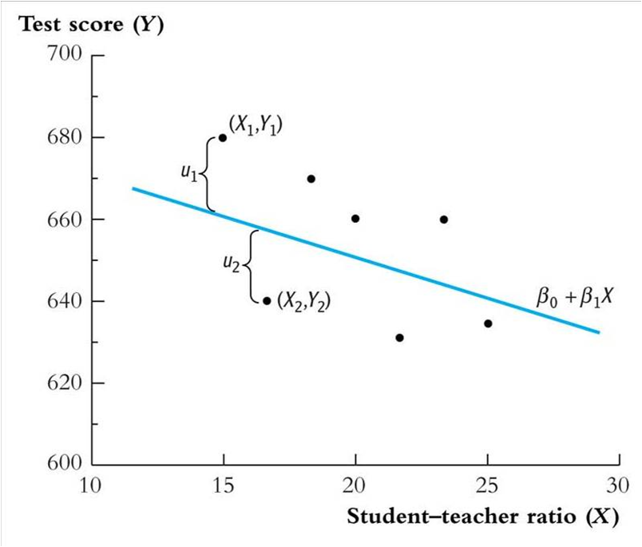
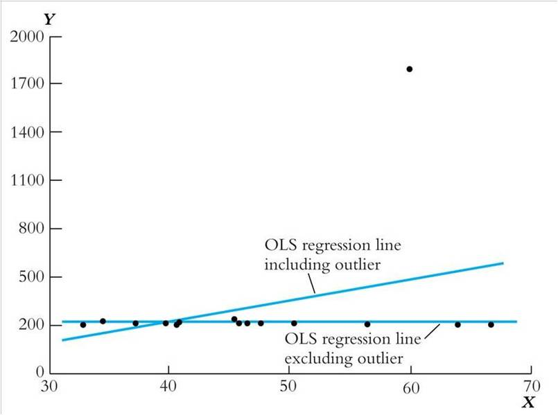

setwd("/Users/tomba/Library/CloudStorage/OneDrive-VrijeUniversiteitAmsterdam/Thomas/project/preparatory")2 Regression Analysis in the Social Sciences
2.1 Introduction
Why should we have something as applied econometrics in the social sciences? That is because we have theories and those theories contain variables such as in the direct utility function of model (\(\ref{eq:directutility}\)):
\[\begin{equation} U(x_1, x2) = x_1^\alpha \cdot x_2^\beta \label{eq:directutility} \end{equation}\]
Here, the quantities of the goods \(x_1\) and \(x_2\) are considered to be known—also often referred to as data. In theoretical work they are fictional or sometimes simulated. The parameters \(\alpha\) and \(\beta\) are not known and we often want to estimate them. If we know what the parameters \(\alpha\) and \(\beta\) should be, then we can calculate what utility a certain amount of consumption of both goods gives and then, for example, assess which combination of goods gives maximum utility.
This course is about using data to quantify (socio-economic) parameters. Moreover, we focus on measuring causal effects, instead of mere correlations. Note, that in an ideal world, we would like conducting experiments as to measure a causal relation of a phenomenon \(X\) on \(Y\). However, we almost always only have observational data on, for example, demand and prices. Therefore, this course and syllabus deals with (i) difficulties arising from using observational data to estimate these causal effects and (ii) rewriting models as (\(\ref{eq:directutility}\)) such that we can actually use data to tease out values for—in this case—\(\alpha\) and \(\beta\).
Moreover, very often experiments are not feasible or highly unethical.
This chapter is organised as follows. The next section addresses the problem of finding a relation between some \(X\) and some \(Y\). Here, we follow an example from the well-known textbook of Stock, Watson, et al. (2003) where we look at the relation between school class size and school class performance. At the same time, we also introduce some R commands. To do so, this section deals as well with the statistical framework that is needed for applied econometrics. Note that we assume that the reader already had a course in introductionary statistics and that we provide only the basic concepts most important for this course in Appendix A.
2.2 So, what is the problem?
As explained in the introduction above, applied econometrics aims to give the policy maker well-informed, and evidence based, values for variables she needs. She needs these variables basically for two separate things:
- Causal inference: The policy maker wants to assess the effect of a change in one variable (typically called \(X\)) on another variables (often called \(Y\)).
- Prediction: If you know what variable \(X\) is, what should \(Y\) then be?
Nowadays, most applied econometric techniques are concerned with causal inference, not so much with prediction. Even more, the techniques often applied are beneficial for correct causal inference, but might harm prediction. However, see that without correct causal inference (so knowing the true causal mechanism) prediction is always cumbersome. That is why current methods such as machine learning methods first focus on finding the correct causal mechanism (even without sometimes specifying what they may be) and then optimize prediction.
Thus, finding (causal) mechanism helps the scientist or policy maker in assessing the outcomes of a particular (policy) intervention. In the economic realm one could think about trying to assess the following quantities:
- To what extent do people eat less meat if we increase the prices with 1% (using a meat-tax)?
- If we increase Dutch dikes with one meter, how much less flood risk will there be?
- How much do classes perform better is we reduce class-size with one student?
2.2.1 A first encounter with R
For this section, we will focus on the last question. And this is an important question for policy as teachers are costly, but parents value school performance very highly. To start answering this question we use data. In R data can be in many formats, but usually is in a text file, often with the extension .csv. The good thing about this format is that it can always be read with every computer and every operating system. To start using R we first need to set the working directory to the appropriate directory. You can do this by using the following command:
.csv stands for comma seperated value and is just a text file commas denoting the columns.I suggest that for this—and every other course—you have a specific directoryNote here that this file path is used on an Apple or Linux system. On a Windows system you need forward slashes. It is also good to have subdirectories in your project/course folder for e.g. slides, data and tutorials. Already a couple of things can be noticed from this command. We set a working directory with setwd and afterwards we put the path in parentheses (that is now known as the argument from the setwd command). Moreover, because we are working with text (a so-called string variable), the path has to be in quotation marks.
Now suppose you have the subdirectory data in your course folder and in that data directory you have a file called CASchools.csv. Now, this dataset describes 420 school districts in California and, amongst other things, their average performance (measured by a test score) and their financial constraints (measured by the amount of students per teacher).
Often it is as well advisable to make a distinction between derived and raw data. Raw data is original data and derived data is data you have transformed or worked on. In principle, you do not want to change the original data!This dataset can be downloaded from Canvas as well with already the data transformed.
To import the data in R you make use of the read.csv command, as follows:
# Read in CASchools dataset
CASchools <- read.csv("./data/CASchools.csv")Note that we can comment on our code by the use of the #-sign. Everything after will not be used for computation. And I advise you to regularly comment on your code as that makes it easier for somebody and future you to understand the code. Moreover, the <- symbol indicated that the output of the command on the right hand side is poured into a new object (somethings we conveniently in this case call CASchools as well) on the left hand side of this symbol. This object is now a so-called dataframe which you can open in, e.g., RStudio. To some extent it resembles the Excel set-up with observations in rows and variables in the columns.
For our purpose a much quicker way to load the CASchools.csv dataset is to use the AER package that contains many datasets that are often used for educational purposes.
But note that some data in this particular
CASchools file still has to be transformed which I will do below.# First, invoke the library AER
# (at the beginning of each session you have to do this)
# (you also have to install packages which you can do using the package pane in the right-bottom panel)
library(AER)
data(CASchools)In addition, we would like to know how the data set looks like, for example what kind of variables it contains. We do this by invoking the command head which give the first six lines of the data set:
head(CASchools) district school county grades students teachers
1 75119 Sunol Glen Unified Alameda KK-08 195 10.90
2 61499 Manzanita Elementary Butte KK-08 240 11.15
3 61549 Thermalito Union Elementary Butte KK-08 1550 82.90
4 61457 Golden Feather Union Elementary Butte KK-08 243 14.00
5 61523 Palermo Union Elementary Butte KK-08 1335 71.50
6 62042 Burrel Union Elementary Fresno KK-08 137 6.40
calworks lunch computer expenditure income english read math
1 0.5102 2.0408 67 6384.911 22.690001 0.000000 691.6 690.0
2 15.4167 47.9167 101 5099.381 9.824000 4.583333 660.5 661.9
3 55.0323 76.3226 169 5501.955 8.978000 30.000002 636.3 650.9
4 36.4754 77.0492 85 7101.831 8.978000 0.000000 651.9 643.5
5 33.1086 78.4270 171 5235.988 9.080333 13.857677 641.8 639.9
6 12.3188 86.9565 25 5580.147 10.415000 12.408759 605.7 605.4This provides information about the variables and the names and types of variables. In this case variables are either a float (a real number) or a string (text). Note as well, that this kind of output is cumbersome and ugly and not fit directly for reporting. Later, we will try to make this look better in an automatic way.
The command summary gives descriptive statistics. Suppose that in this case we are only interested in the variable math (average scores for mathematics by district). Then we invoke this by:
summary(CASchools$math) Min. 1st Qu. Median Mean 3rd Qu. Max.
605.4 639.4 652.5 653.3 665.9 709.5 Note that we invoke the command summary and in its argument is one variable math of the dataframe CASchools. We get access to this variable by the use of the $-sign.
Now we see descriptive statistics for the variable math, containing the mean, the standard deviation, the minimum and maximum, and the first and third quartile of this variable. For this exercise and also for the remainder of this syllabus we are actually interested in two variables that are not in the data set, but that we have to compute ourselves; namely, the average test scores of reading and mathematics and the size of the classes (or the student-teacher ratio). We do so as follows:
# compute new variable STR and append it to CASchools dataframe
CASchools$str <- CASchools$students / CASchools$teachers
# compute new variable TestScore and append it to CASchools dataframe
CASchools$testscr <- (CASchools$read + CASchools$math) / 2 Here, the <- symbol again means you are creating something new on the left hand side of the symbol (in this case a variable in the dataframe CASchools, but in general you always make a new object).
R is a so-called object-oriented language and (almost) everything is an object including dataframes and variables.For a first insight in the relation between class size and class performance we might want to draw a so-called scatter plot. These types of plots relate the values of two variables in a two-dimensional way by giving the values as coordinates. The following syntax will do so.[Note that the first ]
plot(CASchools$str , CASchools$testscr)This “cloud” of dots does not yield a clearly visible relation between class performance and class size. However, this can be deceptive. Often it is difficult to discern clear relations from raw data only. Therefore we need to resort to numerical evidence.
2.2.2 Numerical evidence
To assess whether there is a relation between class performance and class size as displayed in Figure 2.1 we need numerical or statistical evidence. Before we start to engage in regression analysis, we first perform a rather simple analysis, but the underlying mechanisms are identical to that of regression analysis. We first create two groups: namely, districts with “small” (number of students per teacher is below 20 or STR \(<\) 20) and “large” (number of students per teacher is equal or above 20 or STR \(\geq\) 20) class sizes. Then we can adopt three relatively straightforward strategies here:
- Estimation
- Here, we compare the average test scores in districts with low student-teacher ratios to those with high student-teacher ratios. So, we basically try to assess whether average behaviour is different.
- Hypothesis testing
- Now, we aim to test the “null” hypothesis that the mean test scores in the two types of districts are the same, against the “alternative” hypothesis that they differ.
- Confidence intervals
- This strategy estimates an interval for the difference in the mean test scores, so small versus large student-teacher ratio districts.
In R we can make a start with this data analysis by executing the following two commands:
library(dplyr)
CASchools$large <- CASchools$str >= 20
CASchools %>%
group_by(large) %>%
summarise(
mean_testscr = mean(testscr),
sd_testscr = sd(testscr),
obs = n()
)# A tibble: 2 × 4
large mean_testscr sd_testscr obs
<lgl> <dbl> <dbl> <int>
1 FALSE 657. 19.4 239
2 TRUE 650. 17.9 181We now invoke a second library (a very handy one, called dplyr to create a new dataframe consisting of statistics of our CASchools dataframe. The first command generates a new variable called large and denotes an indicator being 0 (of FALSE) if STR \(< 20\) and 1 (or TRUE) if STR \(\geq 20\). The second command summarizes the testscore variable again, but now only gives the mean, standard deviation and the number of observations and does this by each value of the new variable large (the group_by command). Of course, this output is rather ugly and it is better to make a nice table such as Table 2.1).
That is, handy in R. This is where programs as
STATA would be easier out of the box for these simple tasks. However, dplyr is incredibly powerful and its functionality can be easily extended to all sorts of data managements tasks, making it incredibly powerful.| Class size | Average score | Standard deviation | Observations |
|---|---|---|---|
| Small | 657.2 | 19.4 | 239 |
| Large | 650.1 | 17.9 | 181 |
Now, for all three strategies (estimation, testing, confidence intervals) we want to know something about the difference—usually denoted as \(\Delta\). Or, specifically:
- For estimation: determine the \(\Delta\) or the difference between group means
- For hypothesis testing: can we reject the null-hypothesis that the difference is zero, or\(\Delta = 0\)
- For confidence intervals: can we construct a confidence interval for \(\Delta\)
2.2.2.1 Estimation
In his case the concept of estimation (that is to determine the difference between the two groups’ average scores) is rather straightforward as we need to calculate the difference between the mean test scores within each group, or:
\[\begin{align} \bar{Y}_{small} - \bar{Y}_{large} &= \frac{1}{n_{small}} \sum_{i=1}^{n_{small}}Y_i - \frac{1}{n_{large}} \sum_{i=1}^{n_{large}} Y_i \notag \\ &= 657.2-650.1 \notag \\ &=7.2 \label{eq:estimationlarge} \end{align}\]
This basically means subtracting the average scores of Table 2.1 (later we see how to do this automatically in R). Now, the difference—\(\Delta\)—equals 7.2. We then have to ask ourselves whether this is a large difference in a real-world sense. Note that, from Figure 2.1, test scores seem to range from 600 to 800 and do not really have a direct meaning for us. A useful trick then is to look at the standard deviation (note that if things are normally distributed, 95% of all probability mass is within the range mean plus or minus two times the standard deviation). In this case, the difference is about \(1/3\) of the standard deviation. A different way of looking at this is looking at the percentiles of test scores. In R this looks like:
quantiles <- c(0.10, 0.25, 0.5, 0.75, 0.9)
quantile(CASchools$testscr, quantiles) 10% 25% 50% 75% 90%
630.3950 640.0500 654.4500 666.6625 678.8600 where the command quantile asks for a tabulation of certain statistics and gives the \(x\)-th percentile of that statistic. Now note that between the 50th and 75th percentile there is only 12 points. So given this information, the difference of \(7.4\) is rather sizable. But whether this difference is big enough to be important for school reform discussions, for parents, or for a school committee is a question we cannot answer with this analysis.
2.2.2.2 Hypothesis testing
An alternative is to test the null-hypothesis that the difference \(\Delta = 0\). For that we need a so-called difference-in-means test and compute the corresponding \(t\)-statistic,1 \[\begin{equation} t = \frac{\bar{Y}_s - \bar{Y}_l}{\sqrt{\frac{s^2_s}{n_s} +\frac{s^2_l}{n_l} }} = \frac{\bar{Y}_s - \bar{Y}_l}{SE(\bar{Y}_s - \bar{Y}_l)} \label{eq:testinglarge} \end{equation}\] where \(SE(\bar{Y}_s - \bar{Y}_l)\) is the standard error of \((\bar{Y}_s - \bar{Y}_l)\), the subscripts \(s\) and \(l\) refer to “small” and “large” STR districts, and \(s_s^2 = \frac{1}{n_{small}}\sum_{i=1}^{n_s}(Y_i - \bar{Y}_s)^2\)
We can compute this difference-of-means \(t\)-statistic by filling this in with the numbers of Table 2.1: \[\begin{equation} t = \frac{\bar{Y}_s - \bar{Y}_l}{\sqrt{\frac{s^2_s}{n_s} +\frac{s^2_l}{n_l} }} = \frac{657.2 - 650.1}{\sqrt{\frac{19.4^2}{238} +\frac{17.9^2}{182} }} = \frac{7.2}{1.83} = 3.92 \end{equation}\]
But then what? Well, recall that we reject a null-hypothesis when the critical value is below a certain threshold (usually 5%). In this case that is equivalent with stating that \(|t|>1.96\). So, we reject (at the 5% significance level) the null hypothesis that the two means are the same. We will come back to this procedure in Section 2.3.2.2.
2.2.2.3 Confidence interval
Finally, we can construct a 95% confidence interval for the difference between the means, which is: \[\begin{equation} (\bar{Y}_s - \bar{Y}_l)\pm 1.96 \times SE(\bar{Y}_s - \bar{Y}_l) = 7.2 \pm 1.96 \times 1.83 = (3.6, 10.8) \label{eq:cilarge} \end{equation}\] So, what does this mean again. Well, two things. First, the 95% confidence interval for \(\Delta\) doesn’t include 0 and, second, the hypothesis that \(\Delta = 0\) is rejected at the 5% level. We will come back to confidence intervals as well, but for now a confidence interval can be seen as an interval of numbers that will not be rejected as null-hypothesis.
2.2.3 Always be smart (and a bit lazy)
So, why give this rather simple procedure so much attention. That is because all “classical” statistics are centered around these three elements and statistical computer output will always give, at least, these three. And they are as well very much related with each other. Once you know two of them, you know the third one as well.
Now, although the procedure is rather straightforward, it is also a bit cumbersome and prone to errors. Therefore, it is much easier to let R do it:
t.test(testscr ~ large, data = CASchools)
Welch Two Sample t-test
data: testscr by large
t = 3.9268, df = 402.34, p-value = 0.0001013
alternative hypothesis: true difference in means between group FALSE and group TRUE is not equal to 0
95 percent confidence interval:
3.580186 10.758685
sample estimates:
mean in group FALSE mean in group TRUE
657.2462 650.0768 So, in this case we want to assess the difference in test score by groups (being small and large classes). Note, however that the difference in means, \(t\)-statistic and thus the confidence intervals are similar as in, e.g., equation \(\ref{eq:cilarge}\).
Now try to find out for yourself that this output gives you the estimation of \(\Delta\) of equation \(\ref{eq:estimationlarge}\), the \(t\)-value and corresponding test outcome of equation \(\ref{eq:testinglarge}\) where the corresponding confidence intervals of equation \(\ref{eq:cilarge}\) can be readily calculated.
2.3 Univariate regression
The three strategies we adopted in Section 2.2.2 for assessing the difference between groups directly translate to the case of regression analysis. Here we also look at estimation, hypothesis testing and confidence intervals. But before that we first look at the origin of the name regression in Section 2.3.1.
2.3.1 Genesis: regression towards the mean
The name regression seems to have a negative connotation, as progress is in general seen as good and regression as bad. And actually this is true as the name regression was deliberately given as to describe a negative process: in full regression towards the mean. The concept of regression was actually coined by Sir Francis Galton together with other statistical terms, such as correlation and deviation (Senn 2011). Galton was a notorious statistician who measured everything and else, including the length of french bread and the size of human skulls.
in 1886, Galton started to research the height of adult children with the height of their parents (Galton 1886). The original data can be seen in the scatterplot in Figure 2.2. What Galton expected was that the relation between the height of children and that of their parents was a one-to-one relation. On average children should receive the same height of their parents. So, in fact he expected a \(45^{\circ}\) line—the red line; a line with slope equal to 1.

However, he found consistently the blue line, a line with positive slope but lower than 1 (the blue line in Figure 2.3). That entails that, on average tall parents get tall children but not as tall as themselves. Of course, this goes as well the other way. Short parents get short children but not as short as themselves.

Galton coined this process regression towards the mean.2 In the end we would all converge towards the mean and all look the same. For the Victorian Sir Frances Galton and his contemporaries in an age where social and income classes were highly separated this was truly a horror. Especially, because his cousin was Charles Darwin who actually claimed that species diverged. Of course, in Galton reasoning there is a mistake as this only models genetic influence and not accidental differences not influenced by genetics. Note as well that this analysis says something about the average, but not about individual differences.
This regression towards the mean is now seen as a very important characteristic of regression models, and you can easily be fooled by it. It is now stated as:
\(\ldots\) a concept that refers to the fact that if one sample of a random variable is extreme, the next sampling of the same random variable is likely to be closer to its mean
For instance, suppose that everything went really well for a course and you got a 9 for an examination. That does not mean that the next time you will do equally well (you will still do well, but not that well). Or, your favorite football club does extremely well in a particular year (Leicester City FC comes to mind who became premier league champion in 2016). That does not mean that the next year it will do equally well, and so forth and so on.
2.3.2 Regression with one regressor
So, linear regression allows us to estimate, and make inferences about, population slope coefficients. Inference means drawing conclusions and population refers to the fact that we do not want to say something about our sample, but instead about the whole population. Ultimately our aim is to estimate the causal effect on \(Y\) of a unit change in \(X\)—but for now, just think of the problem of fitting a straight line to data on two variables, \(Y\) and \(X\).
Similar to Subsection Section 2.2.2) we have three strategies to make inferences:
- We estimation the relation:
- This now boils down to the question how we should draw a line through the data to estimate the (population) slope using Ordinary Least Squares (OLS—a specific and most common type of regression analysis)
- And then we have to assess the advantages and disadvantages of OLS
- We could refer to hypothesis testing:
- Very often this comes down to testing where the slope is zero. Namely, if the slope is zero, then the data does not show a relation between \(Y\) and \(X\).
- Using confidence intervals:
- This is related to constructing a confidence interval for the slope
Before we look into this we first need some clarification on notation. As mentioned above, we would like to know the population regression line:
\[\begin{equation} testscr = \beta_0 + \beta_1 STR, \end{equation}\] where \[\begin{eqnarray} \beta_1& =& \text{slope of population regression line} \notag \\ &=& \frac{\Delta Testscore}{\Delta STR} \notag \\ &=& \text{change in test score for a \textbf{unit} change in STR} \end{eqnarray}\] Note the definition here of \(\beta_1\). It gives the marginal effect of a change in \(STR\) on \(testscr\). So the interpretation of the parameter \(\beta_1\) is very straightforward. However, we do not know the population value of \(\beta_1\) and we therefore have to estimate it using data.
In general, the population linear regression model is different as we add element \(u_1\). \[\begin{equation} Y_i = \beta_0 + \beta_1 X_i + u_i, \qquad i\ldots n \label{eq:ols} \end{equation}\] Now, \(X\) denotes the independent variable or regressor, \(Y\) the dependent variable, \(\beta_0\) the intercept, \(\beta_1\) the slope, and \(u_i\) the regression error. The regression error consists of omitted factors, or possibly measurement error in the measurement of \(Y\). In general, these omitted factors are other factors that influence \(Y\), other than the variable \(X\).
2.3.2.1 Estimating with OLS

To estimate the population linear regression model we apply the ordinary least squares estimator. Again, as Figure 2.4 shows as well, a linear regression line is a straight line through points in a scatterplot. Actually, we want to draw that line such that the distance of all points to that line is minimized. See that in Figure 2.4 the distances between the points and the line are given by the \(u_i\)’s, the regression errors. So, if we somehow can minimize all \(u_i\)’s we are fine. But those distances could be both positive and negative and they might cancel each other out. Therefore, we first square the regression errors and then minimize (hence the name: ordinary least squares). Also, see from Eq. \(\ref{eq:ols}\) that:
\[\begin{equation} u_i = Y_i - (\beta_0 + \beta_1 X_i) \longleftrightarrow (u_i)^2 = \left[Y_i - (\beta_0 + \beta_1 X_i) \right]^2 \end{equation}\]
But how can we estimate \(\beta_0\) and \(\beta_1\) from data? For that we will focus on the least squares (ordinary least squares or OLS) estimator of the unknown parameters \(\beta_0\) and \(\beta_1\), which solves, \[\begin{equation} \min_{b_0,b_1} \sum^n_{i=1} \left[Y_i - (b_0 + b_1 X_i) \right]^2 \end{equation}\]
In fact, the OLS estimators of the slope \(\beta\)\(_1\) and the intercept \(\beta\)\(_0\) are:3
\[\begin{eqnarray} \hat{\beta}_1 &=& \frac{\sum^n_{i=1}(X_i - \overline{X})(Y_i - \overline{Y})}{\sum^n_{i=1}(X_i - \overline{X})^2} = \frac{s_{XY}}{s^2_X}\\ \hat{\beta}_0 &=& \overline{Y} - \hat{\beta}_1\overline{X} \end{eqnarray}\]
Although you do not need to learn these formula’s by heart some insightful comments can be retrieved from them. First, if a parameter is estimated then it gets a hat symbol on its top. Second, the optimal \(\hat{\beta}_1\) is equal to \(\frac{s_{XY}}{s^2_X}\) and this is the sampling covariance between \(X\) and \(Y\) divided by the sampling variance of \(X\). This is not a correlation as the units still depend on \(X\) and \(Y\) and therefore the slope can be larger than \(1\) or smaller than \(-1\), but it does say something about the relation between \(X\) and \(Y\). Third, the constant is governed by the estimated parameter \(\hat{\beta}_0\).
From here we can predict the values \(\hat{Y}_i\) and residuals \(\hat{u}_i\) as they are: \[\begin{eqnarray} \hat{Y}_i &=& \hat{\beta}_0 + \hat{\beta}_1 X_i, \qquad i = 1, \ldots, n \notag\\ \hat{u}_i &=& Y_i - \hat{Y}_i, \qquad i = 1, \ldots, n \end{eqnarray}\]
When we apply this to our data cloud in Figure 2.1 then we get the following optimal population regression line:
where the estimated slope equals \(\hat{\beta}_1 = -2.28\), the estimated intercept equals \(\hat{\beta}_0 = 698.9\) and the total population regression line can be written as: \(\widehat{TestScore} = 698.9 - 2.28 \times STR\). So, how to interpret the estimated slope and intercept now? First, the slope entails that districts with one more student per teacher on average have test scores that are 2.28 points lower (that is, \(\frac{\Delta TestScore}{\Delta STR} =-2.28\)). Secondly, the intercept (taken literally) means that, according to this estimated line, districts with zero students per teacher would have a (predicted) test score of 698.9. Now, this does not make any sense—it actually extrapolates the line outside the range of the data. In this case we can say that the intercept is not economically meaningful.
Now, how to fill in predictions? One of the districts in the data set is Antelope (CA) for which \(STR = 19.33\) and \(TestScore = 657.8\) Then the predicted value for the testscore is \(\hat{Y}_{Antelope}= 698.9 - 2.28 \times 19.33 = 654.8\) and the resulting residual is \(\hat{u}_{Antelope} = 657.8 - 654.8 = 3.0\)
In R both the constant and the slope can be easily retrieved by:
The command
lm stands for linear model. Note as well how the formula is specified. First, the dependent variable, then a ~ sign and then the independent variable. Finally, we have to specify which dataframe to use; namely, R can have several dataframes in its memory.model_1 <- lm(testscr ~ str, data = CASchools)
summary(model_1)
Call:
lm(formula = testscr ~ str, data = CASchools)
Residuals:
Min 1Q Median 3Q Max
-47.727 -14.251 0.483 12.822 48.540
Coefficients:
Estimate Std. Error t value Pr(>|t|)
(Intercept) 698.9329 9.4675 73.825 < 2e-16 ***
str -2.2798 0.4798 -4.751 2.78e-06 ***
---
Signif. codes: 0 '***' 0.001 '**' 0.01 '*' 0.05 '.' 0.1 ' ' 1
Residual standard error: 18.58 on 418 degrees of freedom
Multiple R-squared: 0.05124, Adjusted R-squared: 0.04897
F-statistic: 22.58 on 1 and 418 DF, p-value: 2.783e-06We will discuss the rest of this output later.
2.3.2.2 Hypothesis testing
We can assess the importance of the line as well with hypothesis testing. Again, recall that in in applied econometrics we will only reject the null-hypothesis, we do not accept an hypothesis based upon one statistical test only. So, we aim to test \(H_0: E(Y) = \mu_{Y,0}\) vs. \(H_1: E(Y) \neq \mu_{Y,0}\), where \(\mu_{Y,0}\) is some pre-specified quantity that we are interested in. Typically \(\mu_{Y,0} = 0\) as this denotes no relation, but sometimes you could be interested in, e.g., whether \(\mu_{Y,0} = 1\) when testing elasticities. Or you could be interested in other quantities.
Testing statistical hypotheses is often very confusing, because of two things. First, you actually test whether the data you have corresponds with the null-hypothesis. Or, in other words:
What is the probability that your data (\(D\)) might be right given the null-hypothesis (\(H_0\)): \(\Pr(D|H_0)\)
And that is a strange concept. You first imagine a world \(H_0\) with the data that it should provide and then test that imaginary world.
Secondly, there is the notation that often works confusing. First, we have the \(p\)-value which equals the probability of drawing a statistic (e.g., \(\bar{Y}\)) at least as adverse to the null (that is: your imaginary world) as the value actually computed with your data, assuming again that the null-hypothesis is true—again, your imaginary world. Secondly, there is the significance level of a test which is a pre-specified probability of incorrectly rejecting the null, when the null is actually true.
Now, suppose that you want to calculate the \(p\)-value based on an estimated coefficient \(\hat{\beta}_1\), then you construct the following test: \[\begin{equation} p\text{-value} = \Pr_{H_0}[|\hat{\beta}_1 - \beta_{1,0}| > |\hat{\beta}_1^{act} - \beta_{1,0}| \end{equation}\] where \(\hat{\beta}_1^{act}\) is the value of \(\hat{\beta}_1\) actually observed, and \(\beta_{1,0}\) is the value of \(\beta_1\) under the null-hypothesis (e.g., \(\beta_{1,0} = 0\)). Now, this is confusing, but in words it states that if you belief the null-hypothesis, what is then the probability that the estimated value is \(\hat{\beta}_1^{act}\) or even more adverse to the value of the null hypothesis (in other words even more extreme values).
To test the null hypothesis \(H_0\) we follow three steps. First, we need to compute the standard error of \(\hat{\beta_1}\), which is an estimator of \(\sigma_{\hat{\beta_1}}\). Using an ordinary least squares estimator, standard errors for coefficients are given by:
\[\begin{equation} \sigma_{\hat{\beta_1}} = \sqrt{\frac{1}{n} \frac{\frac{1}{n-2} \sum_{i=1}^n (X_i - \bar{X})^2 u_i^2}{\left[\frac{1}{n} \sum_{i=1}^n (X_i - \bar{X})^2 \right]^2}}, \label{eq:olsse} \end{equation}\] which is a rather daunting expression.
Second, we need to compute the \(t\)-statistic: \[\begin{equation} t = \frac{\hat{\beta}_1 - \beta_{1,0}}{\sigma_{\hat{\beta_1}} } \label{eq:olst} \end{equation}\]
Finally, we need to calculate the \(p\)-value. To do so, we need to know the sampling distribution of \(\hat{\beta}_1\), which we know is complicated if \(n\) is small, but typically you have enough observations to invoke the Central Limit Theorem. So, if \(n\) is large, you can use the normal approximation (CLT) as follows \[\begin{eqnarray} p\text{-value}& = & \Pr_{H_0}\left[\left|\hat{\beta}_1 - \beta_{1,0}\right| > \left|\hat{\beta}_1^{act} - \beta_{1,0}\right|\right] \notag\\ & = & \Pr_{H_0}\left[\left|\frac{\hat{\beta}_1 - \beta_{1,0}}{\sigma_{\hat{\beta_1}} }\right| > \left|\frac{\hat{\beta}_1 ^{act} - \beta_{1,0}}{\sigma_{\hat{\beta_1}} }\right|\right] \notag \\ & = & \Pr_{H_0}[|t| > |t^{act}|] \notag \\ &\simeq& \text{probability under left + right } N(0,1) \text{ tails} \end{eqnarray}\] where \(\sigma_{\hat{\beta_1}}\) again equals the standard error of \(\hat{\beta}_1\),
So, if you know \(\hat{\beta}_1\) and \(\sigma_{\hat{\beta}_1}\) you can calculate this. However, computers are much faster, in doing to. For example, suppose we want to test whether \(\beta_{1,0} = 0\) using the regression output displayed above which gives \(\hat{\beta}_1 = -2.28\) and \(\sigma_{\hat{\beta}_1} = 0.52\). That is step 1. Note that R already calculated the standard error of Eq. \(\ref{eq:olsse}\). For the next step we need to compute the \(t\)-statistic, which is:
\[\begin{equation} t^{act} = \frac{2.28 - \beta_{1,0}}{0.52} = \frac{2.28 - 0}{0.52} = -4.39. \label{eq:olstemp} \end{equation}\]
then the \(p\)-value can be seen from Figure 2.6:

That is, for large \(n\) (and typically we have that), the \(p\)-value is the probability that a \(N(0,1)\) random variable falls outside \(|\hat{\beta}_1^{act} - \beta_{1,0})/\sigma_{\hat{\beta}_1} | = |t|\). That is the blue areas under the normal distribution and they entail a probability mass. Now, if both surfaces on the sides are not larger than 2.5%, then we can reject the null-hypothesis against a 5% significance level. Now, the computer output above gives a \(p\)-value of \(0.000\), which is a bit strange. The \(p\)-value is actually not zero, but a very small number and definitely smaller than \(0.05\), so we can reject the null-hypothesis being \(\beta_{1,0} = 0\) at a 5% significance level (and at a 1% and 0.1% significance level as well). Now, if the \(t\)-statistic is exactly 1.96 in absolute value, then the \(p\)-value is 0.05. So, to repeat the steps, but now using computer output for testing the hypothesis that \(\beta_1 = \beta_{1,0}\)
- Get the standard error from computer output
- Compute the \(t^{act}\)-statistics as in Eq. \(\ref{eq:olst}\)
- Get the corresponding \(p\)-value. Or, reject the null-hypothesis at the 5% significance level if \(|t^{act}| > 1.96\).
Now there is a link between the \(p\)-value and the significance level. The significance level is pre-specified. For example, if the pre-specified significance level is 5%, then you reject the null hypothesis if \(|t| \geq 1.96\) or equivalently, you reject if \(p \leq 0.05\). The \(p\)-value is sometimes called the marginal significance level. Often, it is better to communicate the \(p\)-value than simply whether a test rejects or not—the \(p\)-value contains more information than the “yes/no” statement about whether the test rejects.
But recently there has been some debate about using \(p\)-values (Amrhein, Greenland, and McShane 2019). Why should you use a 5% significance level, what is so special about that number? Is it not better just to report coefficients and standard errors? Figure 2.7 shows a figure from the journal Nature and how scientists across all fields nowadays see \(p\)-values and statistical significance. This is not to say that statistical testing does not matter, but more the reporting of that statistical testing. First of all, \(p\)-values in themselves do not contain that much information. In the regression output of above the reported \(p\)-values are being equal to 0.000 which is not informative. Secondly, the cut-off point of 5% is a bit harsh and could lead to publications being published only with \(p\)-values just below 0.05, leading to what is called publication bias.

2.3.2.3 Confidence intervals
The exact definition of confidence intervals is a bit tricky. Namely, a 95% confidence interval for \(\hat{\beta}_1\) is an interval that contains the true value of \(\beta_1\) in 95% of repeated samples. That means that a confidence interval does not give a probability (even though we would like to interpret it that way). But you can state that every value within a confidence interval would not be rejected as null-hypothesis, while every value outside the confidence interval would be rejected. Now, if we know both \(\hat{\beta}_1\) and \(\sigma_{\hat{\beta}_1}\) (again using computer output), then a 95% confidence interval can be very easily constructed. For our regression of output of above this entails
\[\begin{equation}
\hat{\beta}_1 \pm 1.96 \times \sigma_{\hat{\beta}_1} = -2.28 \pm 1.96 \times 0.52 = [-3.30, -1.26].
\label{eq:olsci}
\end{equation}\] So, every value between \(-3.30\) and \(-1.26\) will not be rejected as null-hypothesis, while every value outside that interval will be rejected. Note that confidence intervals are again automatically given by computer output. If one would like a confidence interval against another critical level, say against a 99% critical level, one can use the confint.lm() command.
model_1 <- lm(testscr ~ str, data = CASchools)
confint.lm(model_1, level = 0.99) 0.5 % 99.5 %
(Intercept) 674.434471 723.431428
str -3.521425 -1.0381912.3.2.4 Regression with a dummy
Sometimes a regressor is binary, meaning an indicator or a dichotomous (0/1) variable. Let’s go back again to Section 2.2.2, where we created such a binary variable with small and large class sizes (\(X=1\) if class size is small, \(X=0\) if not). Other possible examples are gender (\(X=1\) if female, \(X=0\) if male) or being treated or not (\(X=1\) if treated, \(X=0\) if not). We refer to these types of variables as being dummy variables—and they are very often used in the social sciences.
Now, suppose we have a population regression model that looks like:
\[\begin{equation} Y_i = \beta_0 + \beta_1 X_i + u_i \label{eq:olsdummy} \end{equation}\]
Where \(Y\) denotes, e.g., test scores, and where \(X\), e.g., denotes a dummy variable for a large class (so, if \(STR \geq 20\) then \(X_i = 1\); otherwise \(X_i = 0\)), so there is then only two possibilities:
- For small class size there should hold that \(X_i = 0\) yielding that \(Y_i = \beta_0 + u_i\). Namely \(\beta_1 \times X_i = \beta_1 \times 0 = 0\). That means automatically that the expectation of \(Y_i\) is the constant, being \(\beta_0\). Another way or writing is that the expectation of model \(\ref{eq:olsdummy}\) conditional on the fact that \(X_i = 0\) is \(\mathbb{E}(Y_i \mid X_i = 0) = \beta_0\).
- For large classes there should hold that \(X_i = 1\) yielding that \(X_i = 1\), \(Y_i = \beta_0 + \beta_1 + u_i\). This means that the expectation of model \(\ref{eq:olsdummy}\) conditional on the fact that \(X_i = 1\) is \(\mathbb{E}(Y_i \mid X_i = 1) = \beta_0 + \beta_1\)
So a regression with a dummy as independent variable gives two different constants, for each group (small/large classes) one. You can interpret this as a level-effect (only the level changes, not the slope as there is none here). The interpretation of \(\beta_1\) is in this case rather special and can be denoted as: \[\begin{equation} \beta_1 = \mathbb{E}(Y_i \mid X_i = 1) - \mathbb{E}(Y_i \mid X_i = 0), \end{equation}\] Which is just the population difference in group means.
If we go back to our example with \(X_i = 1\) if \(STR \geq 20\) and 0 otherwise then we get the following regression output
model_2 <- lm(testscr ~ factor(large), data = CASchools)
summary(model_2)
Call:
lm(formula = testscr ~ factor(large), data = CASchools)
Residuals:
Min 1Q Median 3Q Max
-50.496 -14.029 -0.346 12.884 49.504
Coefficients:
Estimate Std. Error t value Pr(>|t|)
(Intercept) 657.246 1.212 542.162 < 2e-16 ***
factor(large)TRUE -7.169 1.847 -3.882 0.00012 ***
---
Signif. codes: 0 '***' 0.001 '**' 0.01 '*' 0.05 '.' 0.1 ' ' 1
Residual standard error: 18.74 on 418 degrees of freedom
Multiple R-squared: 0.0348, Adjusted R-squared: 0.0325
F-statistic: 15.07 on 1 and 418 DF, p-value: 0.0001202Now, note that this is the same output (\(\Delta= -7.2\), \(\sigma_\Delta = 1.85\) and \(t\)-statistic is \(-3.88\)) as when we did the difference in means test in Section 2.2.3 (using the R way). To conclude, this is just another way (and much easier) to do a difference-in-means analysis. And this directly carries over for the situation when we have additional regressors.
They are not exactly the same though and that is that
R for the \(t\)-test in Section 2.2.3 corrects for the degrees of freedom, or the number of variables it uses. In large sample they coincide though.2.4 Least squares assumptions for causal inference
As stated at the start of Section 2.2 applied econometrics focuses on finding a causal effect. But how do you do know that the \(\hat{\beta}_1\) you estimate using the population regression model of Eq. \(\ref{eq:betacausal}\) is indeed a causal effect. In other words, if you change \(X_i\) with one unit, will \(Y_i\) then change with \(\beta_1\) in reality?
\[\begin{equation} Y_i = \beta_0 + \beta_1 X_i + u_i, \qquad i = 1 \dots n \label{eq:betacausal} \end{equation}\]
Fortunately, there is a small set of assumptions that indeed lead to such a causal interpretation. The so-called three least squares assumptions, being:
- The conditional distribution of \(u\) given \(X\) has mean zero, that is, \(E(u \mid X = x) = 0\).
- We also refer to this assumption as the conditional mean independence assumption
- This assumption implies that \(\hat{\beta_1}\) is truly unbiased
- \((X_i,Y_i), i =1 \ldots n\) are i.i.d.
- This is true if \(X\), \(Y\) are collected by simple random sampling
- This delivers the sampling distribution of \(\hat{\beta_0}\) and \(\hat{\beta_1}\)—again with a relatively large number (say \(n > 50\)) the sampling distribution can very well be approximated by a normal distribution
- Large outliers in \(X\) and/or \(Y\) are rare.
- Outliers can result in meaningless values of \(\hat{\beta_1}\)
We will first discuss these three least squares assumptions and then give some other assumptions (but not directly necessary for the identification of causal effects) as well as you frequently encounter them
2.4.1 Least squares assumption 1: conditional mean independence
This first assumption states that \(E(u \mid X = x) = 0\) and is conceptually the most difficult one to grasp. Loosely speaking, it states that the regression error \(u\) is not related with the independent variable \(X\). They are independent of other. Another way of looking at this is displayed in Figure 2.8. Here, whatever the value of student-teacher ratio is, the expectation of the outcome variable (test scores) is always centered around the population regression line. So, on average, you always predict correctly according to your model, for each value of \(X\).

So, when is this assumption violated? For example, consider again the population regression model: \(TestScore_i = \beta_0 + \beta_1 STR_i + u_i\), where \(u_i\) denotes other factors. Now, these other factors can be everything and else. And you should ask yourself whether it is plausible that \(E(u|X = x) = 0\) for all these other factors?
This assumption lies as well at the heart of experimental settings. Namely, consider a theoretical ideal randomized controlled experiment, where:
- \(X\) is randomly assigned to people (students randomly assigned to different size classes or patients randomly assigned to medical treatments).
- Because \(X\) is assigned randomly, all other individual characteristics—the things that make up \(u\)—are independently distributed of \(X\) by definition.
- Thus it automatically follows that: \(E(u \mid X = x) = 0\)
Now, both in actual experiments, or with observational data, we will need to think hard about whether \(E(u|X = x) = 0\) holds. Chapter 3 and Chapter 4 provide various examples where this assumption is violated. However, if this assumption is violated it means that you have a biased inference, which boils down to the fact that your estimated \(\hat{\beta_1}\) is not the one that you want and that correct inference based upon this estimate cannot be done.
2.4.2 Least squares assumption 2: independenty and identically distributed
The second least squares assumptions deals with actual sampling of your data, both the dependent (\(Y\)) and independent (\(X\)) variables. That entails that \((X_i,Y_i), i = 1 \dots n\) should be i.i.d.. This assumptions arises automatically if the entity (individual, district) is sampled by simple random sampling. There are quite some possible violations to this assumption. For example, you sample via your friends on social media (snowballing), or observations are not independent but are correlated, which arises very frequently in the context of temporal correlation or spatial correlation.
The consequence of violating the i.i.d. assumption is less severe then violating the conditional mean independence assumption. It leads to wrong standard errors, not to biased estimations.
2.4.3 Least squares assumption 3: Large outliers are rare
The third and final least square assumption for causal inference is that large outliers are rare. Large outliers are not well defined and depend on the size of both \(Y\) and \(X\), but in general it can be seen as an extreme value of \(X\) or \(Y\). The problem is that such a large outlier can strongly influence the results and in general it can be stated that OLS can be rather sensitive to an outlier. Consider the two population regression lines in Figure 2.9. The flat one (with \(\hat{\beta}_1 = 0)\) does not take the isolated observation in the upper right corner into account. The one with the positive slope does. Now, clearly the one isolated observation in the upper right corner matters to a large extent and is an important driver for the results of the ordinary least squares estimator.

However, this does not automatically entail that the isolated observation should be deleted. What it does entail is that one should go back to her data and investigate whether the outlier could be a mistake—perhaps a typo made when preparing the data or something that went amiss when converting the data from an Excel format to a R format.
2.5 Other least squares assumptions
Oftentimes, two other least squares assumptions are frequently encountered. However, keep in mind that you do not need them for causal inference. They are the assumptions of homoskedasticity and normality.
2.5.1 Homoskedasticity
Homoskedasticity is concerned with the standard errors. Its definition is if \(var(u \mid X=x)\) is constant—that is, if the variance of the conditional distribution of \(u\) given \(X\) does not depend on \(X\)—then \(u\) is said to be homoskedastic. Otherwise, \(u\) is heteroskedastic.

Consider Figure 2.10. Clearly the variance around the population regression line is everywhere the same, regardless the value of student-teacher ratio (\(X\)). Recall, that \(E(u \mid X=x) = 0\) so \(u\) satisfies Least Squares Assumption 1. Now, in addition we also assume that the variance of \(u\) does not depend on \(x\). This is the case of homoskedasticity

Now consider Figure 2.11. Now clearly the variance around the population regression line increases in size of student-teacher ratio (\(X\)). So, \(E(u \mid X=x) = 0\) is still satisfied, but the variance of \(u\) does now depend on \(x\). \(u\) is now said to be heteroskedastic.

Very often data in the social sciences are heteroskedastic. For example, wages are usually heteroskedastic in the amount of education consumed. Figure 2.12 shows the relation between years of education and wages, and the larger the years of education the larger hourly earnings (wages) are—as you would assume it should be. But the variance also increases in years of education. That is because you can easily predict wages when workers enjoyed very few years of schooling—usually those are just above minimum wages—but the spread becomes much wider when years of schooling go up.

Is this now the case for our Californian school dataset. If we look again at the scatterplot between test scores and student-teacher ratios in Figure 2.13, then that is very difficult to see. But then again, does it matter whether you face heteroskedasticity or homoskedasticity.?
Note that so far we have (without saying so) assumed that \(u\) might be heteroskedastic Recall again the three least squares assumptions:
- \(E(u \mid X = x) = 0\)
- \((X_i,Y_i), i =1,\ldots,n\), are i.i.d.
- Large outliers are rare
They do not say anything about homo- or heteroskedasticity and because we have not explicitly assumed homoskedastic errors, we have implicitly allowed for heteroskedasticity.
But what if the errors are in fact homoskedastic? Then in fact you can prove that OLS has the lowest variance among estimators that are linear in \(Y\). The formula for the variance of \(\hat{\beta_1}\) and the OLS standard error simplifies: If \(var(u_i \mid X_i=x) = \sigma_u^2\), then \[\begin{equation} var(\hat{\beta}_1) = \frac{\sigma_u^2}{n\sigma_X^2} \label{eq:olssesimple} \end{equation}\] which is much simpler than Eq. \(\ref{eq:olsse}\). Again note that \(var(\hat{\beta}_1)\) is inversely proportional to \(var(X)\): more spread in \(X\) means more information about \(\hat{\beta}_1\)—we discussed this earlier but it is clearer from this formula.
But what does this mean for estimation. Note that R does not automatically apply Eq. \(\ref{eq:olsse}\) for its standard errors, but uses the simpler version Eq. \(\ref{eq:olssesimple}\) instead. But if we invoke the vcovHC command, R computes heteroskedasticity-robust standard errors. So if you do not, R computes homoskedasticity-only standard errors. So:
vcovHC(model_2) (Intercept) factor(large)TRUE
(Intercept) 1.578968 -1.578968
factor(large)TRUE -1.578968 3.349843where the variances are now on the diagonal and thus the standard error of large is \(\sqrt{3.35}\).
The bottom line is that the errors are either homoskedastic or heteroskedastic and if you use heteroskedastic-robust standard errors, you are fine. Namely:
- If the errors are heteroskedastic and you use the homoskedasticity-only formula for standard errors, your standard errors will be wrong (the homoskedasticity-only estimator of the variance of \(\hat{\beta}_1\) is inconsistent if there is heteroskedasticity).
- The two formulas coincide (when \(n\) is large) in the special case of homoskedasticity.
- So, you should always use heteroskedasticity-robust standard errors.
2.5.2 Normal distributed regression term
Finally, in many introductionary statistic courses, normal distributed error terms are assumed, which facilitates testing with small samples. So, \(u\) should be distributed \(N(0,\sigma^2)\). If you have a reasonable amount of observations (\(n >50\)), you do not need this assumption, and especially not for causal inference.
2.6 Measures of fit
A natural question that might arise is how well the population regression line fits or explains the data. For ordinary least squares estimators often two regression statistics are given that provide complementary measures of the quality of fit:
- The regression \(R^2\): This measures the fraction of the variance of \(Y\) that is explained by \(X\); it is unitless and ranges between zero (no fit) and one (perfect fit). This one is almost always reported.
- The standard error of the regression \(SER\): This measures the magnitude of a typical regression residual in the units of \(Y\).
2.6.1 The regression R\(^2\)
The regression R\(^2\) is the fraction of the sample variance of \(Y_i\) “explained” by the regression. To see this, first note that \(Y_i = \hat{Y}_i + \hat{u}_i\) or the observation is equal to the OLS prediction plus the predicted residual. In this notation, the R\(^2\) is the ratio between the sample variance of \(\hat{Y}\) and the sample variance of \(Y\). Here we make use of the following equity: Total sum of squares = explained “SS” + Residual “SS”—or, \(TSS = ESS + RSS\)—, where we can now define R\(^2\) as:
\[\begin{equation} \text{R}^2= \frac{ESS}{TSS} = \frac{\sum^n_{i=1}\left(\hat{Y}_i - \overline{Y}\right)^2}{\sum^n_{i=1}\left(Y_i - \overline{Y}\right)^2}. \label{eq:r2} \end{equation}\] Now if R\(^2 = 0\) then that means \(ESS = 0\) and if R\(^2 = 1\) then that means \(ESS = TSS\). So, by definition yields \(0 \leq \text{R}^2 \leq 1\). There is one additional remark to make and that is that for an univariate regression model (so with one single \(X\) on the right side), R\(^2\) equals the square of the correlation coefficient between \(X\) and \(Y\).
2.6.2 The Standard Error of the Regression
The standard error of the regression is defined as:
\[\begin{equation} SER = \sqrt{\frac{1}{n-2} \sum_{i=1}^n \hat{u}_i^2} \label{eq:ser} \end{equation}\]
In comparison with the \(R^2\), the \(SER\) is measured in the units of \(u\), which are actually the units of \(Y\). It measures the average “size” of the OLS residual (so the average ‘mistake’ made by the OLS regression line in absolute terms).
However, more often the root mean squared error (\(RMSE\)) is used, which is very closely related to the \(SER\): \[\begin{equation} RMSE = \sqrt{\frac{1}{n} \sum_{i=1}^n \hat{u}_i^2}, \label{eq:rmse} \end{equation}\] where \(RMSE\) only differs from the \(SER\) in the degrees of freedom.
If we again look at our regression output:
summary(model_1)
Call:
lm(formula = testscr ~ str, data = CASchools)
Residuals:
Min 1Q Median 3Q Max
-47.727 -14.251 0.483 12.822 48.540
Coefficients:
Estimate Std. Error t value Pr(>|t|)
(Intercept) 698.9329 9.4675 73.825 < 2e-16 ***
str -2.2798 0.4798 -4.751 2.78e-06 ***
---
Signif. codes: 0 '***' 0.001 '**' 0.01 '*' 0.05 '.' 0.1 ' ' 1
Residual standard error: 18.58 on 418 degrees of freedom
Multiple R-squared: 0.05124, Adjusted R-squared: 0.04897
F-statistic: 22.58 on 1 and 418 DF, p-value: 2.783e-06then we see that the \(R^2 = .05\). So, only 5% of all variation in test scores is explained. This of course makes sense as potential many important variables are not included in the model. However, this does not automatically mean that the impact is biased and especially that the \(STR\) is unimportant in a policy sense. Again, we focus on causal inference, not on making a good model for prediction. The \(SER= 18.6\) (given here as Residual standard error) indicates that the average error made is 18.6 test score units, which can be seen as sizable. In Chapter 3 we include other, and important, variables and what we then of course will see is that the R\(^2\) increases and the \(SER\) decreases.
2.7 Conclusion
Regression analysis in the most common form of statistical analysis over the sciences. Very often is it used to model associations. However, in applied econometrics regression analysis is applied to find causal causal relations. This can be done on the basis of three assumptions, of which the first—the conditional mean assumption—is the most crucial. In fact, if this assumption holds then the data mimics the data that come out of an experiment. This assumption can unfortunately not be proven. We therefore have to think very hard whether this assumption holds. The next Chapter deals with a possible violation of this assumption, how to solve for it and at the same time we answer the question why we want multiple variables in our specification.